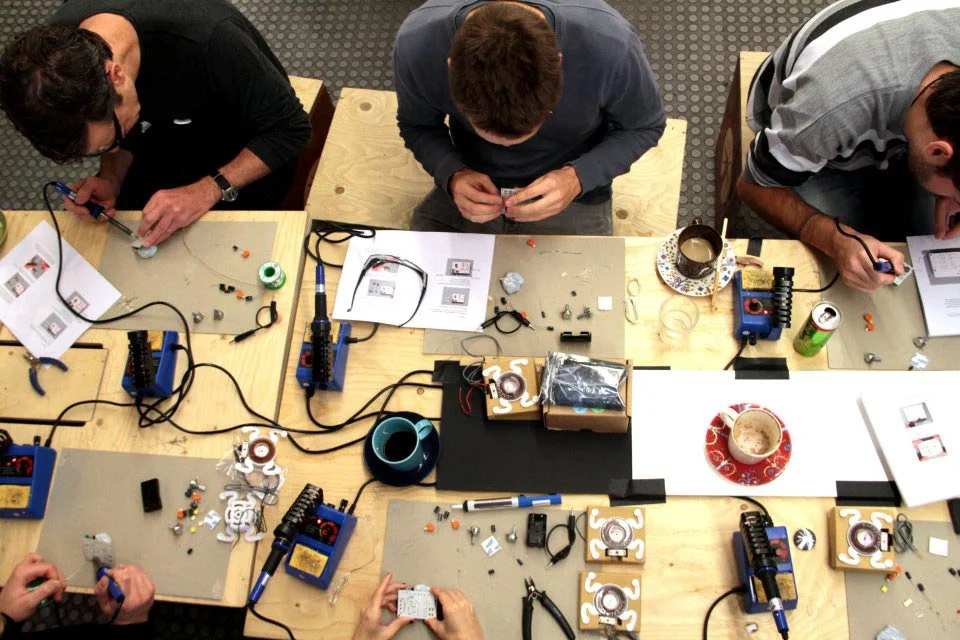

somos@Programando_o_Futuro
Uma organização de direito privado reconhecida pelo Ministério da Justiça como OSCIP - Organização da Sociedade Civil de Interesse Público. O objetivo da Programando o Futuro é desenvolver e apoiar ações que promovam o desenvolvimento sustentável a partir da utilização e apropriação das tecnologias da informação, comunicação e sociais.
Há 15 anos a Programando o Futuro desenvolve atividades que beneficiaram milhares de pessoas e centenas de organizações da sociedade civil em todo o território brasileiro.
O Portfólio da Programando o Futuro está dividido em três eixos de atuação:
- Qualificação profissional.
- Geração de conteúdo.
- Metarreciclagem.